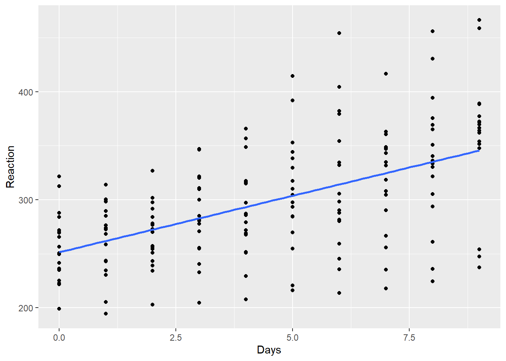
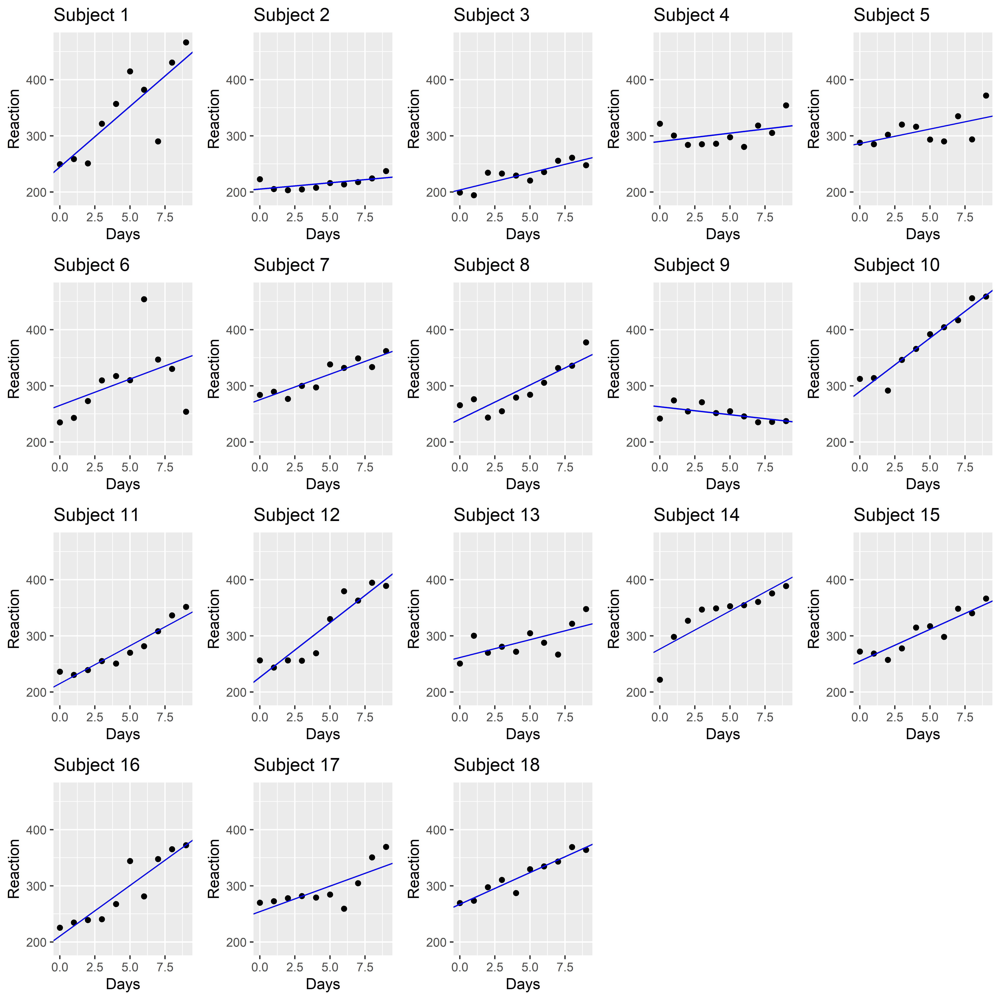
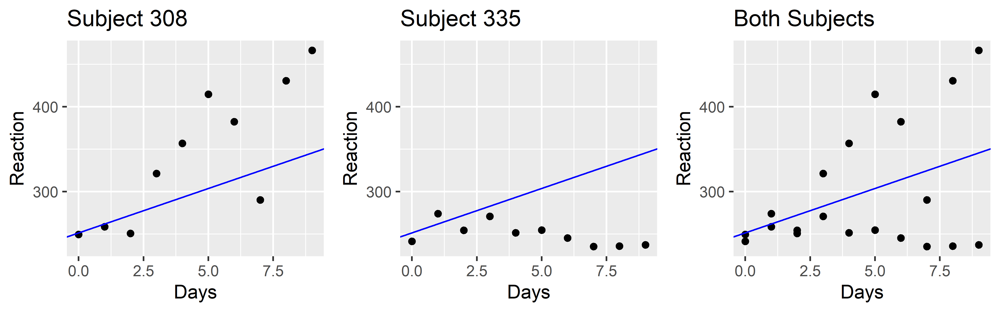
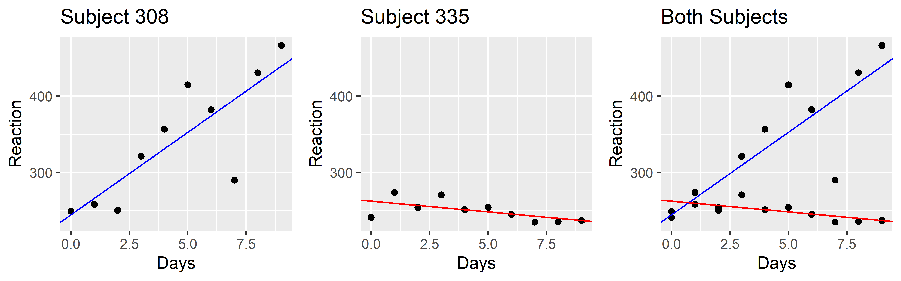
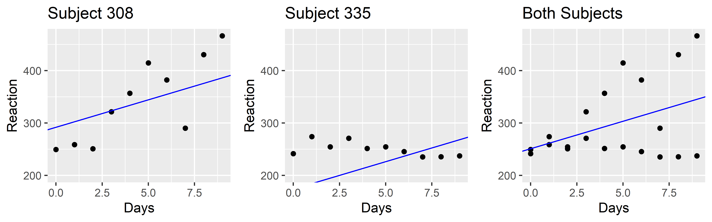
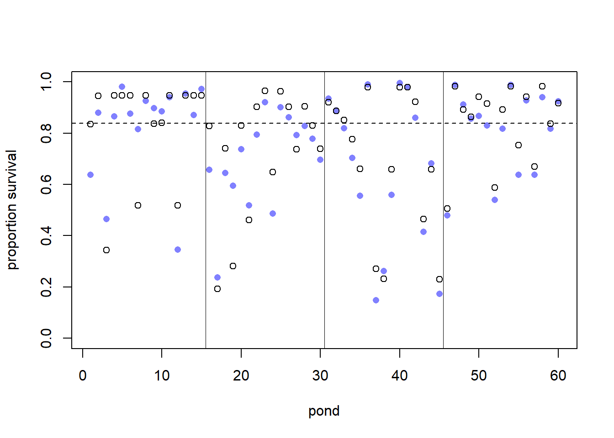
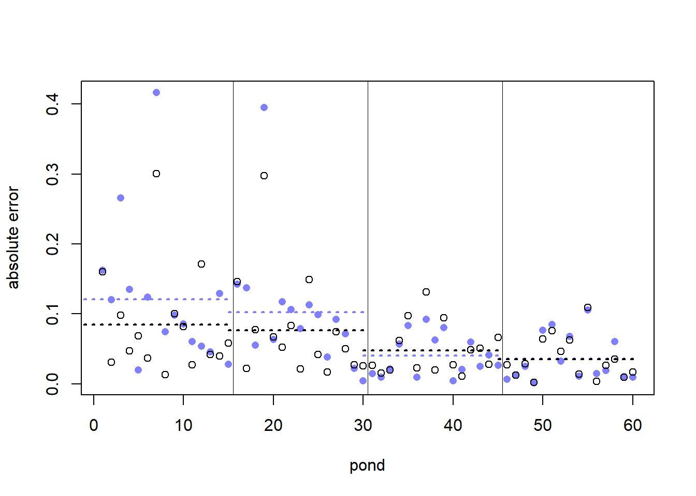
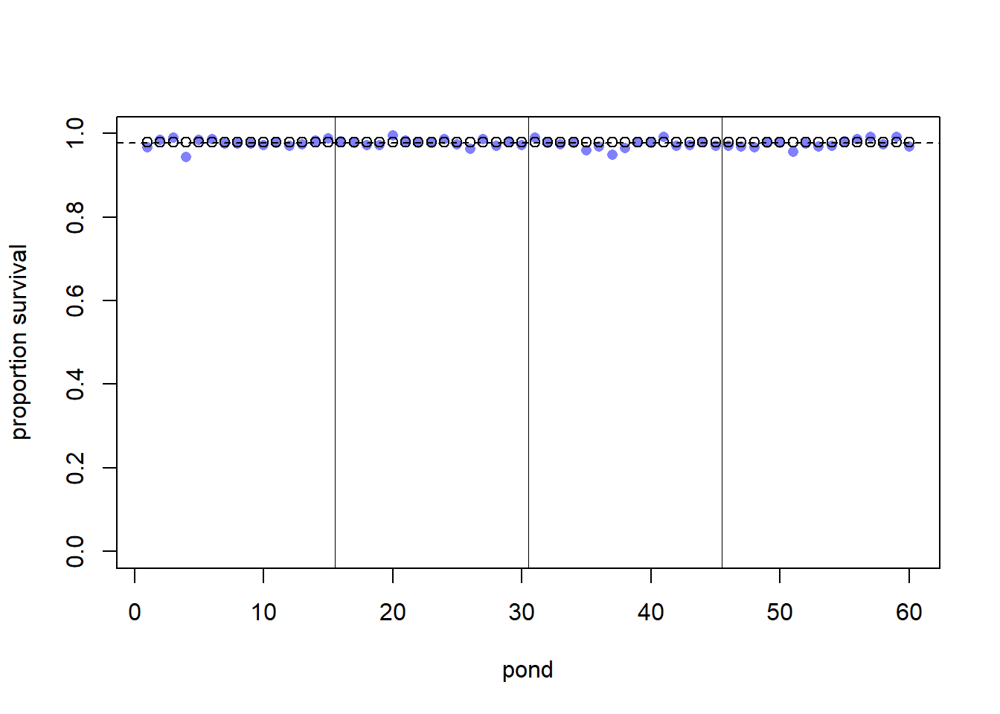
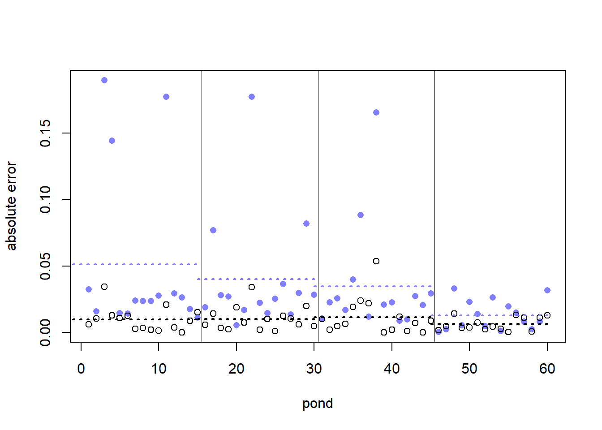

# Load packages
library(bayesrules)
library(tidyverse)
library(rstanarm)
library(broom.mixed)
library(rethinking)
library(ggpubr)
library(lme4)
library(DiagrammeR)April 4 Homework
Load Libraries
Exercise 15.3 (Hierarchical data):
The sleepstudy data is hierarchical. Draw a diagram in the spirit of Figure 15.8 that captures the hierarchical framework. Think: What are the “groups?”
I am using the grVis function from the DiagrammeR package.
DiagrammeR::grViz("digraph {
Population -> 'Day 0' -> 'rt_11'
'Day 0' -> 'rt_21'
Population -> 'Day 1' -> 'rt_12'
'Day 1' -> 'rt_22'
Population -> 'Day 2' -> 'rt_13'
'Day 2' -> 'rt_23'
Population -> 'Day 3' -> 'rt_14'
'Day 3' -> 'rt_24'
Population -> 'Day 4' -> 'rt_15'
'Day 4' -> 'rt_25'
Population -> 'Day 5' -> 'rt_16'
'Day 5' -> 'rt_26'
Population -> 'Day 6' -> 'rt_17'
'Day 6' -> 'rt_27'
Population -> 'Day 7' -> 'rt_18'
'Day 7' -> 'rt_28'
Population -> 'Day 8' -> 'rt_19'
'Day 8' -> 'rt_29'
Population -> 'Day 9' -> 'rt_110'
'Day 9' -> 'rt_210'
}")I have made a diagram for the first two people. We draw reaction times from each person on each day. So rt_11 is participant 1 on day 0, and rt_21 is participant 2 on day 1.
Exercise 15.4 (Complete pooling: Part I)
Suppose that we (incorrectly) took a complete pooling approach to modeling Reaction time (Y) by Days of sleep deprivation (X).
a)
To explore the complete pooled behavior of the data points, construct and discuss a plot of Reaction by Days. In doing so, ignore the subjects and include the observed trend in the relationship.
ggplot(sleepstudy, aes(y = Reaction, x = Days)) +
geom_point() +
geom_smooth(method = "lm", se = FALSE)
This plots Day as a function of reaction time. Here we don’t account for the individual, so we are violating the assumption that each observation is independently distributed. The line I have fit should have a slope and intercept that match the OLS estimates. However, each day contains multiple observations from the same individual (thus violating independence). This also inflates my degrees of freedom. If I were calculating a p-value, it would be much lower than if I averaged each person’s reaction time per day. All of this considered, there is information about each participant we are likely missing. Their may be idiosyncrasies here that are lost because we are treating all observations as independent.
b)
Draw a diagram in the spirit of Figure 15.8 that captures the complete pooling framework.
DiagrammeR::grViz("digraph {
Population -> 'Day 0' -> 'rt_1'
Population -> 'Day 1' -> 'rt_2'
Population -> 'Day 2' -> 'rt_3'
Population -> 'Day 3' -> 'rt_4'
Population -> 'Day 4' -> 'rt_5'
Population -> 'Day 5' -> 'rt_6'
Population -> 'Day 6' -> 'rt_7'
Population -> 'Day 7' -> 'rt_8'
Population -> 'Day 8' -> 'rt_9'
Population -> 'Day 9' -> 'rt_10'
}")Here we don’t account for people, so each reaction time should just be clustered by day.
c)
Using careful notation, write out the structure for the complete pooled model of Y by X.
\(Y_{i} \mid \beta_{0}, \beta_{1}, \sigma \sim N (\mu_{i}, \sigma^{2})\) with \(\mu_{i} = \beta_{0} + \beta_{1}X_{i}\)
Above, the complete pooled model is saying that each Reaction Time (Yi), conditional on an intercept (B0, reaction time at Day 0), a slope (change in reaction time each day), and a common standard deviation is identically ad independently distributed. Each observation is a conditional mean (ui) such that it is distributed via a Gaussian distribution where the mean depends on the unique day.
Exercise 15.6 (No pooling: Part I)
Suppose instead that we (incorrectly) took a no pooling approach in our sleep study analysis.
a)
To explore the no pooled behavior of the data points, construct and discuss separate scatterplots of Reaction by Days for each Subject, including subject-specific trend lines.
# renumber participants so that looping is easier.
sleepstudy$numeric <- as.numeric(sleepstudy$Subject)
# empty dataframe to store unique intercept and slope for each runner.
coef_df <- data.frame("Subject" = "",
"intercept" = "",
"Day" = "")
for (i in unique(sleepstudy$numeric)) {
temp <- stan_glm(
Reaction ~ Days,
data = sleepstudy[sleepstudy$numeric == i,], family = gaussian,
#prior_intercept = normal(50, 2.5, autoscale = TRUE),
prior_aux = exponential(1, autoscale = TRUE),
chains = 4, iter = 5000*2, seed = 84735, refresh = 0)
temp_df <- data.frame("Subject" = i,
"intercept" = temp$coefficients[1],
"Day" = temp$coefficients[2])
# add runner i's intercept and slope to the ith row of larger dataframe
coef_df <- rbind(coef_df, temp_df)
}
# coef_df saved all columns as character. Here I resave them as factors/numeric
br_no_pool_coef_df <- data.frame("Subject" = as.factor(coef_df$Subject),
"intercept" = as.numeric(coef_df$intercept),
"Day" = as.numeric(coef_df$Day))
# remove first row (is empty)
br_no_pool_coef_df <- br_no_pool_coef_df[-1, ]
# reset rowname index to start at 1
row.names(br_no_pool_coef_df) <- NULLNo pooling graph: stan_glm
# empty list where each runner's graph will be saved.
temp_list <- list()
# loop through runners, grab their specific intercepts/slope from previous dataframe, and save graph to list
for (i in unique(sleepstudy$numeric)) {
# runner-specific graph
temp_graph <- ggplot(sleepstudy[sleepstudy$numeric == i, ], aes(x = Days, y = Reaction)) +
geom_point() +
geom_abline(aes_string(intercept = br_no_pool_coef_df[i, 2], slope = br_no_pool_coef_df[i, 3]), color = "blue") +
ggtitle(paste0("Subject ", i)) +
ylim(190, 470)
# save ith runner graph to temp_list
temp_list[[i]] <- temp_graph
}
# Use do.call to pass all elements of graph_list to ggarrange
arranged_plots <- do.call("ggarrange", temp_list)
# Print or display the arranged plots
print(arranged_plots)
Each person has a different intercept and slope, and non of these are informed by any of the other participants. This makes it a useless model for prediction in the sense that it isn’t clear how to use any of these estimates when predicting a new participant’s reaction time.
b)
Draw a diagram in the spirit of Figure 15.6 that captures the no pooling framework.
DiagrammeR::grViz("digraph {
Population -> 'Participant 1' -> 'Day 01' -> 'rt_01'
'Participant 1' -> 'Day 11' -> 'rt_11'
Population -> 'Participant 2' -> 'Day 02' -> 'rt_02'
'Participant 2' -> 'Day 12' -> 'rt_12'
}")I wasn’t sure if there was a single right way to do this. Basically, each participant has a reaction time for each day. I have shown the first two days for the first 2 participants. Everything is separate, meaning all coefficients will be estimated seperately.
c)
Using careful notation, write out the structure for the no pooled model of Y by X.
\(Y_{i} \mid \beta_{0i}, \beta_{1i}, \sigma_{i} \sim N (\mu_{i}, \sigma_{i}^{2})\) with \(\mu_{i} = \beta_{0i} + \beta_{1i}X_{i}\)
I believe this is right. Each person will have their own coefficient estimates, so the model must index the beta coefficients as well. I wasn’t sure about the standard deviation, but I decided to index it too given each participant will have a different spread of their reaction times. But if that is wrong, then I would update the equation so it does not index the sigma.
Exercise 15.8 (Complete vs no vs partial pooling)
Suppose we only had data on the two subjects below. For both, provide a loose sketch of three separate trend lines corresponding to a complete pooled, no pooled, and partial pooled model of Reaction time by Days.
First, I fit models for all three scenarios.
# Complete pooled
m.15.8_completepool <- stan_glm(Reaction ~ Days,
data = sleepstudy, family = gaussian,
prior_aux = exponential(1, autoscale = TRUE),
chains = 4, iter = 5000*2, seed = 84735, refresh = 0)
#tidy(m.15.8_completepool, conf.int = TRUE, conf.level = 0.80)
# No pool participant 308
no_pool_308 <- stan_glm(Reaction ~ Days,
data = sleepstudy[sleepstudy$Subject == 308, ], family = gaussian,
prior_aux = exponential(1, autoscale = TRUE),
chains = 4, iter = 5000*2, seed = 84735, refresh = 0)
# No pool participant 335
no_pool_335 <- stan_glm(Reaction ~ Days,
data = sleepstudy[sleepstudy$Subject == 335, ], family = gaussian,
prior_aux = exponential(1, autoscale = TRUE),
chains = 4, iter = 5000*2, seed = 84735, refresh = 0)
# partial pooling
m.15.8_partial_pool <- stan_glmer(Reaction ~ Days + (1 | Subject),
data = sleepstudy, family = gaussian,
prior_aux = exponential(1, autoscale = TRUE),
chains = 4, iter = 5000*2, seed = 84735, refresh = 0)Complete-pooled Trendline
# complete pool
ggarrange(
ggplot(sleepstudy[sleepstudy$Subject == 308, ], aes(x = Days, y = Reaction)) +
geom_point() +
ggtitle("Subject 308") +
ylim(min(sleepstudy$Reaction[sleepstudy$Subject == 308 | sleepstudy$Subject == 335]), max(sleepstudy$Reaction[sleepstudy$Subject == 308 | sleepstudy$Subject == 335])) +
geom_abline(aes(intercept = m.15.8_completepool$coefficients[1], slope = m.15.8_completepool$coefficients[2]), color = "blue"),
ggplot(sleepstudy[sleepstudy$Subject == 335, ], aes(x = Days, y = Reaction)) +
geom_point() +
ggtitle("Subject 335") +
ylim(min(sleepstudy$Reaction[sleepstudy$Subject == 308 | sleepstudy$Subject == 335]), max(sleepstudy$Reaction[sleepstudy$Subject == 308 | sleepstudy$Subject == 335])) +
geom_abline(aes(intercept = m.15.8_completepool$coefficients[1], slope = m.15.8_completepool$coefficients[2]), color = "blue"),
ggplot(sleepstudy[sleepstudy$Subject == 308 | sleepstudy$Subject == 335, ], aes(x = Days, y = Reaction)) +
geom_point() +
ggtitle("Both Subjects") +
ylim(min(sleepstudy$Reaction[sleepstudy$Subject == 308 | sleepstudy$Subject == 335]), max(sleepstudy$Reaction[sleepstudy$Subject == 308 | sleepstudy$Subject == 335])) +
geom_abline(aes(intercept = m.15.8_completepool$coefficients[1], slope = m.15.8_completepool$coefficients[2]), color = "blue"),
ncol = 3
)
When we completely pool the data, then the trend line goes exactly through the middle of the pooled data (right graph). However, if we put this trend line through participant 308 and participant 335 individually, the trend line doesn’t fit very well. For participant 335, it is even in the wrong direction.
No-pooled Trendline
# complete pool
ggarrange(
ggplot(sleepstudy[sleepstudy$Subject == 308, ], aes(x = Days, y = Reaction)) +
geom_point() +
ggtitle("Subject 308") +
ylim(min(sleepstudy$Reaction[sleepstudy$Subject == 308 | sleepstudy$Subject == 335]), max(sleepstudy$Reaction[sleepstudy$Subject == 308 | sleepstudy$Subject == 335])) +
geom_abline(aes(intercept = no_pool_308$coefficients[1], slope = no_pool_308$coefficients[2]), color = "blue"),
ggplot(sleepstudy[sleepstudy$Subject == 335, ], aes(x = Days, y = Reaction)) +
geom_point() +
ggtitle("Subject 335") +
ylim(min(sleepstudy$Reaction[sleepstudy$Subject == 308 | sleepstudy$Subject == 335]), max(sleepstudy$Reaction[sleepstudy$Subject == 308 | sleepstudy$Subject == 335])) +
geom_abline(aes(intercept = no_pool_335$coefficients[1], slope = no_pool_335$coefficients[2]), color = "red"),
ggplot(sleepstudy[sleepstudy$Subject == 308 | sleepstudy$Subject == 335, ], aes(x = Days, y = Reaction)) +
geom_point() +
ggtitle("Both Subjects") +
ylim(min(sleepstudy$Reaction[sleepstudy$Subject == 308 | sleepstudy$Subject == 335]), max(sleepstudy$Reaction[sleepstudy$Subject == 308 | sleepstudy$Subject == 335])) +
geom_abline(aes(intercept = no_pool_308$coefficients[1], slope = no_pool_308$coefficients[2]), color = "blue") +
geom_abline(aes(intercept = no_pool_335$coefficients[1], slope = no_pool_335$coefficients[2]), color = "red"),
ncol = 3
)
Now we have a really well fitting trend line for each individual participant. However, when we look at the pooled data (right graph) we don’t have any group level estimate, making prediction of new data impossible.
Partial-pooled Trendline
ggarrange(
ggplot(sleepstudy[sleepstudy$Subject == 308, ], aes(x = Days, y = Reaction)) +
geom_point() +
ggtitle("Subject 308") +
ylim(200, max(sleepstudy$Reaction[sleepstudy$Subject == 308 | sleepstudy$Subject == 335])) +
geom_abline(aes(intercept = m.15.8_partial_pool$coefficients[1] + ranef(m.15.8_partial_pool)$Subject[1,1], slope = m.15.8_partial_pool$coefficients[2]), color = "blue"),
ggplot(sleepstudy[sleepstudy$Subject == 335, ], aes(x = Days, y = Reaction)) +
geom_point() +
ggtitle("Subject 335") +
ylim(200, max(sleepstudy$Reaction[sleepstudy$Subject == 308 | sleepstudy$Subject == 335])) +
geom_abline(aes(intercept = m.15.8_partial_pool$coefficients[1] + ranef(m.15.8_partial_pool)$Subject[2,1], slope = m.15.8_partial_pool$coefficients[2]), color = "blue"),
ggplot(sleepstudy[sleepstudy$Subject == 308 | sleepstudy$Subject == 335, ], aes(x = Days, y = Reaction)) +
geom_point() +
ggtitle("Both Subjects") +
ylim(200, max(sleepstudy$Reaction[sleepstudy$Subject == 308 | sleepstudy$Subject == 335])) +
geom_abline(aes(intercept = m.15.8_partial_pool$coefficients[1], slope = m.15.8_partial_pool$coefficients[2]), color = "blue"),
ncol = 3
)
All three panels have different intercepts. The slopes are all the same as this is an intercept only model. But now, we can use the trendline on the right graph to make predictions about new data, and we have also accounted for individual differences (first two panels).
MN1
Do the tadpole simulation from the book (section 13.2), but for another scenario (other true parameters of your choice), and display result as Fig. 13.1 and Fig 13.3. Briefly compare results of your simulation with McElreath’s simulation.
First, I am redoing the example from the book to ensure I understand the process and to make sure I am doing it correctly.
# simulation parameters
a_bar <- 1.5
sigma <- 1.5
nponds <- 60
Ni <- as.integer(rep( c(5,10,25,35), each = 15))
# same seed McElreath uses. For reproducibility
set.seed(5005)
# sample log odds of survival
a_pond <- rnorm(nponds, mean = a_bar, sd = sigma)
# simulation dataframe
dsim <- data.frame( pond=1:nponds , Ni=Ni , true_a=a_pond )
# Si = number that survived in nth tank
dsim$Si <- rbinom(nponds, prob = logistic(dsim$true_a), size = dsim$Ni)
# proportion that survived in nth tank
dsim$p_nopool <- dsim$Si/dsim$Ni
# list for regression
dat <- list(Si=dsim$Si, Ni=dsim$Ni, pond=dsim$pond)Now I run his multilevel model.
# run McElreath's multilevel model
m13.3 <- ulam(alist(
Si ~ dbinom( Ni , p ),
logit(p) <- a_pond[pond],
a_pond[pond] ~ dnorm( a_bar , sigma ),
a_bar ~ dnorm( 0 , 1.5 ),
sigma ~ dexp( 1 )),
data = dat, chains = 4)Running MCMC with 4 sequential chains, with 1 thread(s) per chain...
Chain 1 Iteration: 1 / 1000 [ 0%] (Warmup)
Chain 1 Iteration: 100 / 1000 [ 10%] (Warmup)
Chain 1 Iteration: 200 / 1000 [ 20%] (Warmup)
Chain 1 Iteration: 300 / 1000 [ 30%] (Warmup)
Chain 1 Iteration: 400 / 1000 [ 40%] (Warmup)
Chain 1 Iteration: 500 / 1000 [ 50%] (Warmup)
Chain 1 Iteration: 501 / 1000 [ 50%] (Sampling)
Chain 1 Iteration: 600 / 1000 [ 60%] (Sampling)
Chain 1 Iteration: 700 / 1000 [ 70%] (Sampling)
Chain 1 Iteration: 800 / 1000 [ 80%] (Sampling)
Chain 1 Iteration: 900 / 1000 [ 90%] (Sampling)
Chain 1 Iteration: 1000 / 1000 [100%] (Sampling)
Chain 1 finished in 0.3 seconds.
Chain 2 Iteration: 1 / 1000 [ 0%] (Warmup)
Chain 2 Iteration: 100 / 1000 [ 10%] (Warmup)
Chain 2 Iteration: 200 / 1000 [ 20%] (Warmup)
Chain 2 Iteration: 300 / 1000 [ 30%] (Warmup)
Chain 2 Iteration: 400 / 1000 [ 40%] (Warmup)
Chain 2 Iteration: 500 / 1000 [ 50%] (Warmup)
Chain 2 Iteration: 501 / 1000 [ 50%] (Sampling)
Chain 2 Iteration: 600 / 1000 [ 60%] (Sampling)
Chain 2 Iteration: 700 / 1000 [ 70%] (Sampling)
Chain 2 Iteration: 800 / 1000 [ 80%] (Sampling)
Chain 2 Iteration: 900 / 1000 [ 90%] (Sampling)
Chain 2 Iteration: 1000 / 1000 [100%] (Sampling)
Chain 2 finished in 0.5 seconds.
Chain 3 Iteration: 1 / 1000 [ 0%] (Warmup)
Chain 3 Iteration: 100 / 1000 [ 10%] (Warmup)
Chain 3 Iteration: 200 / 1000 [ 20%] (Warmup)
Chain 3 Iteration: 300 / 1000 [ 30%] (Warmup)
Chain 3 Iteration: 400 / 1000 [ 40%] (Warmup)
Chain 3 Iteration: 500 / 1000 [ 50%] (Warmup)
Chain 3 Iteration: 501 / 1000 [ 50%] (Sampling)
Chain 3 Iteration: 600 / 1000 [ 60%] (Sampling)
Chain 3 Iteration: 700 / 1000 [ 70%] (Sampling)
Chain 3 Iteration: 800 / 1000 [ 80%] (Sampling)
Chain 3 Iteration: 900 / 1000 [ 90%] (Sampling)
Chain 3 Iteration: 1000 / 1000 [100%] (Sampling)
Chain 3 finished in 0.4 seconds.
Chain 4 Iteration: 1 / 1000 [ 0%] (Warmup)
Chain 4 Iteration: 100 / 1000 [ 10%] (Warmup)
Chain 4 Iteration: 200 / 1000 [ 20%] (Warmup)
Chain 4 Iteration: 300 / 1000 [ 30%] (Warmup)
Chain 4 Iteration: 400 / 1000 [ 40%] (Warmup)
Chain 4 Iteration: 500 / 1000 [ 50%] (Warmup)
Chain 4 Iteration: 501 / 1000 [ 50%] (Sampling)
Chain 4 Iteration: 600 / 1000 [ 60%] (Sampling)
Chain 4 Iteration: 700 / 1000 [ 70%] (Sampling)
Chain 4 Iteration: 800 / 1000 [ 80%] (Sampling)
Chain 4 Iteration: 900 / 1000 [ 90%] (Sampling)
Chain 4 Iteration: 1000 / 1000 [100%] (Sampling)
Chain 4 finished in 0.4 seconds.
All 4 chains finished successfully.
Mean chain execution time: 0.4 seconds.
Total execution time: 2.8 seconds.Now I calculate various things for plotting
# Smaple posterior for each pond. Each column is a pond, each row is a sample from that pond's posterior
post <- extract.samples(m13.3)
dsim$propsurv.est <- logistic( apply( post$a_pond , 2 , mean ) )
# mean posterior probability of survival in each tank
dsim$p_partpool <- apply(inv_logit(post$a_pond), 2, mean)
# true proportion of survival in each tank
dsim$p_true <- inv_logit(dsim$true_a)
# difference between no pooling estimates and true survival rate in each tank
nopool_error <- abs(dsim$p_nopool - dsim$p_true)
# difference between partial pooling estimates and true survival rate in each tank
partpool_error <- abs( dsim$p_partpool - dsim$p_true )
# average no pooling survival per tank group
nopool_avg <- aggregate(nopool_error,list(dsim$Ni),mean)
# average partial pooling survival per group
partpool_avg <- aggregate(partpool_error,list(dsim$Ni),mean)Note: blue = no pool black = partial pool Now, I plot the error of each tank’s estimates (partial pooling average distance from true survival and no pooling average distance from true survival)
# average partial pooling survival per group
partpool_avg <- aggregate(partpool_error,list(dsim$Ni),mean)
plot(1:60, ylim = c(0,1), dsim$p_true, xlab="pond", ylab="proportion survival", col = rangi2, pch = 16)
points(1:60 , dsim$propsurv.est)
# mark posterior mean probability across tanks
abline( h=mean(inv_logit(post$a_bar)) , lty=2 )
abline(v = 15.5 , lwd = 0.5)
abline(v = 30.5 , lwd = 0.5)
abline(v = 45.5 , lwd = 0.5)
# average partial pooling survival per groupplot(1:60, nopool_error, xlab="pond", ylab="absolute error", col = rangi2, pch = 16)
points(1:60 , partpool_error)
abline(v = 15.5 , lwd = 0.5)
abline(v = 30.5 , lwd = 0.5)
abline(v = 45.5 , lwd = 0.5)
segments(x0 = -2, x1 = 15, y0 = nopool_avg[1,2], y1 = nopool_avg[1,2], lwd = 2, lty = 3, col = rangi2)
segments(x0 = -2, x1 = 15, y0 = partpool_avg[1,2], y1 = partpool_avg[1,2], lwd = 2, lty = 3, col = "black")
segments(x0 = 15, x1 = 30, y0 = nopool_avg[2,2], y1 = nopool_avg[2,2], lwd = 2, lty = 3, col = rangi2)
segments(x0 = 15, x1 = 30, y0 = partpool_avg[2,2], y1 = partpool_avg[2,2], lwd = 2, lty = 3, col = "black")
segments(x0 = 30, x1 = 45, y0 = nopool_avg[3,2], y1 = nopool_avg[3,2], lwd = 2, lty = 3, col = rangi2)
segments(x0 = 30, x1 = 45 ,y0 = partpool_avg[3,2], y1 = partpool_avg[3,2], lwd = 2, lty = 3, col = "black")
segments(x0 = 45 ,x1 = 60, y0 = nopool_avg[4,2], y1 = nopool_avg[4,2], lwd = 2, lty = 3, col = rangi2)
segments(x0 = 45 ,x1 = 60, y0 = partpool_avg[4,2], y1 = partpool_avg[4,2], lwd = 2, lty = 3, col = "black")
No pooling in blue, partial pooling in black. There is more absolute error in no pooling in the smaller ponds.
Now, I will try with high survival and low variance
# simulation parameters
a_bar <- 4
sigma <- .5
nponds <- 60
Ni <- as.integer(rep( c(5,10,25,35), each = 15))
# same seed McElreath uses. For reproducibility
set.seed(1234)
# sample log odds of survival
a_pond <- rnorm(nponds, mean = a_bar, sd = sigma)
# simulation dataframe
dsim <- data.frame( pond=1:nponds , Ni=Ni , true_a=a_pond )
# Si = number that survived in nth tank
dsim$Si <- rbinom(nponds, prob = logistic(dsim$true_a), size = dsim$Ni)
# proportion that survived in nth tank
dsim$p_nopool <- dsim$Si/dsim$Ni
# list for regression
dat <- list(Si=dsim$Si, Ni=dsim$Ni, pond=dsim$pond)Now I run his multilevel model.
# run McElreath's multilevel model
high_surviv_low_variance <- ulam(alist(
Si ~ dbinom( Ni , p ),
logit(p) <- a_pond[pond],
a_pond[pond] ~ dnorm( a_bar , sigma ),
a_bar ~ dnorm( 0 , 1.5 ),
sigma ~ dexp( 1 )),
data = dat, chains = 4)Running MCMC with 4 sequential chains, with 1 thread(s) per chain...
Chain 1 Iteration: 1 / 1000 [ 0%] (Warmup)
Chain 1 Iteration: 100 / 1000 [ 10%] (Warmup)
Chain 1 Iteration: 200 / 1000 [ 20%] (Warmup)
Chain 1 Iteration: 300 / 1000 [ 30%] (Warmup)
Chain 1 Iteration: 400 / 1000 [ 40%] (Warmup)
Chain 1 Iteration: 500 / 1000 [ 50%] (Warmup)
Chain 1 Iteration: 501 / 1000 [ 50%] (Sampling)
Chain 1 Iteration: 600 / 1000 [ 60%] (Sampling)
Chain 1 Iteration: 700 / 1000 [ 70%] (Sampling)
Chain 1 Iteration: 800 / 1000 [ 80%] (Sampling)
Chain 1 Iteration: 900 / 1000 [ 90%] (Sampling)
Chain 1 Iteration: 1000 / 1000 [100%] (Sampling)
Chain 1 finished in 0.3 seconds.
Chain 2 Iteration: 1 / 1000 [ 0%] (Warmup)
Chain 2 Iteration: 100 / 1000 [ 10%] (Warmup)
Chain 2 Iteration: 200 / 1000 [ 20%] (Warmup)
Chain 2 Iteration: 300 / 1000 [ 30%] (Warmup)
Chain 2 Iteration: 400 / 1000 [ 40%] (Warmup)
Chain 2 Iteration: 500 / 1000 [ 50%] (Warmup)
Chain 2 Iteration: 501 / 1000 [ 50%] (Sampling)
Chain 2 Iteration: 600 / 1000 [ 60%] (Sampling)
Chain 2 Iteration: 700 / 1000 [ 70%] (Sampling)
Chain 2 Iteration: 800 / 1000 [ 80%] (Sampling)
Chain 2 Iteration: 900 / 1000 [ 90%] (Sampling)
Chain 2 Iteration: 1000 / 1000 [100%] (Sampling)
Chain 2 finished in 0.4 seconds.
Chain 3 Iteration: 1 / 1000 [ 0%] (Warmup)
Chain 3 Iteration: 100 / 1000 [ 10%] (Warmup)
Chain 3 Iteration: 200 / 1000 [ 20%] (Warmup)
Chain 3 Iteration: 300 / 1000 [ 30%] (Warmup)
Chain 3 Iteration: 400 / 1000 [ 40%] (Warmup)
Chain 3 Iteration: 500 / 1000 [ 50%] (Warmup)
Chain 3 Iteration: 501 / 1000 [ 50%] (Sampling)
Chain 3 Iteration: 600 / 1000 [ 60%] (Sampling)
Chain 3 Iteration: 700 / 1000 [ 70%] (Sampling)
Chain 3 Iteration: 800 / 1000 [ 80%] (Sampling)
Chain 3 Iteration: 900 / 1000 [ 90%] (Sampling)
Chain 3 Iteration: 1000 / 1000 [100%] (Sampling)
Chain 3 finished in 0.3 seconds.
Chain 4 Iteration: 1 / 1000 [ 0%] (Warmup)
Chain 4 Iteration: 100 / 1000 [ 10%] (Warmup)
Chain 4 Iteration: 200 / 1000 [ 20%] (Warmup)
Chain 4 Iteration: 300 / 1000 [ 30%] (Warmup)
Chain 4 Iteration: 400 / 1000 [ 40%] (Warmup)
Chain 4 Iteration: 500 / 1000 [ 50%] (Warmup)
Chain 4 Iteration: 501 / 1000 [ 50%] (Sampling)
Chain 4 Iteration: 600 / 1000 [ 60%] (Sampling)
Chain 4 Iteration: 700 / 1000 [ 70%] (Sampling)
Chain 4 Iteration: 800 / 1000 [ 80%] (Sampling)
Chain 4 Iteration: 900 / 1000 [ 90%] (Sampling)
Chain 4 Iteration: 1000 / 1000 [100%] (Sampling)
Chain 4 finished in 0.3 seconds.
All 4 chains finished successfully.
Mean chain execution time: 0.3 seconds.
Total execution time: 2.4 seconds.Now I calculate various things for plotting
# Smaple posterior for each pond. Each column is a pond, each row is a sample from that pond's posterior
post <- extract.samples(high_surviv_low_variance)
dsim$propsurv.est <- logistic( apply( post$a_pond , 2 , mean ) )
# mean posterior probability of survival in each tank
dsim$p_partpool <- apply(inv_logit(post$a_pond), 2, mean)
# true proportion of survival in each tank
dsim$p_true <- inv_logit(dsim$true_a)
# difference between no pooling estimates and true survival rate in each tank
nopool_error <- abs(dsim$p_nopool - dsim$p_true)
# difference between partial pooling estimates and true survival rate in each tank
partpool_error <- abs( dsim$p_partpool - dsim$p_true )
# average no pooling survival per tank group
nopool_avg <- aggregate(nopool_error,list(dsim$Ni),mean)
# average partial pooling survival per group
partpool_avg <- aggregate(partpool_error,list(dsim$Ni),mean)Note: blue = no pool black = partial pool Now, I plot the error of each tank’s estimates (partial pooling average distance from true survival and no pooling average distance from true survival)
# average partial pooling survival per group
partpool_avg <- aggregate(partpool_error,list(dsim$Ni),mean)
dsim$propsurv.est <- logistic( apply( post$a_bar , 2 , mean ) )
plot(1:60, ylim = c(0,1), dsim$p_true, xlab="pond", ylab="proportion survival", col = rangi2, pch = 16)
points(1:60 , dsim$propsurv.est)
# mark posterior mean probability across tanks
abline( h=mean(inv_logit(post$a_bar)) , lty=2 )
abline(v = 15.5 , lwd = 0.5)
abline(v = 30.5 , lwd = 0.5)
abline(v = 45.5 , lwd = 0.5)
Because we have such high survivability and such low variance, most partial pool estimates are very similar to the no pooled estimates.
plot(1:60, nopool_error, xlab="pond", ylab="absolute error", col = rangi2, pch = 16)
points(1:60 , partpool_error)
abline(v = 15.5 , lwd = 0.5)
abline(v = 30.5 , lwd = 0.5)
abline(v = 45.5 , lwd = 0.5)
segments(x0 = -2, x1 = 15, y0 = nopool_avg[1,2], y1 = nopool_avg[1,2], lwd = 2, lty = 3, col = rangi2)
segments(x0 = -2, x1 = 15, y0 = partpool_avg[1,2], y1 = partpool_avg[1,2], lwd = 2, lty = 3, col = "black")
segments(x0 = 15, x1 = 30, y0 = nopool_avg[2,2], y1 = nopool_avg[2,2], lwd = 2, lty = 3, col = rangi2)
segments(x0 = 15, x1 = 30, y0 = partpool_avg[2,2], y1 = partpool_avg[2,2], lwd = 2, lty = 3, col = "black")
segments(x0 = 30, x1 = 45, y0 = nopool_avg[3,2], y1 = nopool_avg[3,2], lwd = 2, lty = 3, col = rangi2)
segments(x0 = 30, x1 = 45 ,y0 = partpool_avg[3,2], y1 = partpool_avg[3,2], lwd = 2, lty = 3, col = "black")
segments(x0 = 45 ,x1 = 60, y0 = nopool_avg[4,2], y1 = nopool_avg[4,2], lwd = 2, lty = 3, col = rangi2)
segments(x0 = 45 ,x1 = 60, y0 = partpool_avg[4,2], y1 = partpool_avg[4,2], lwd = 2, lty = 3, col = "black")
Because we have high survival and low variance, I would expect very similar results between no pooling and partial pooing. The results here show very little variance in the smaller tanks compared to McElreath’s example. The difference looks bigger, but the absolute error is smaller (it’s just the scale of this y-axis versus the previous one). This shows that when we have smaller variance, the no-pool estimates actually do an ok job.